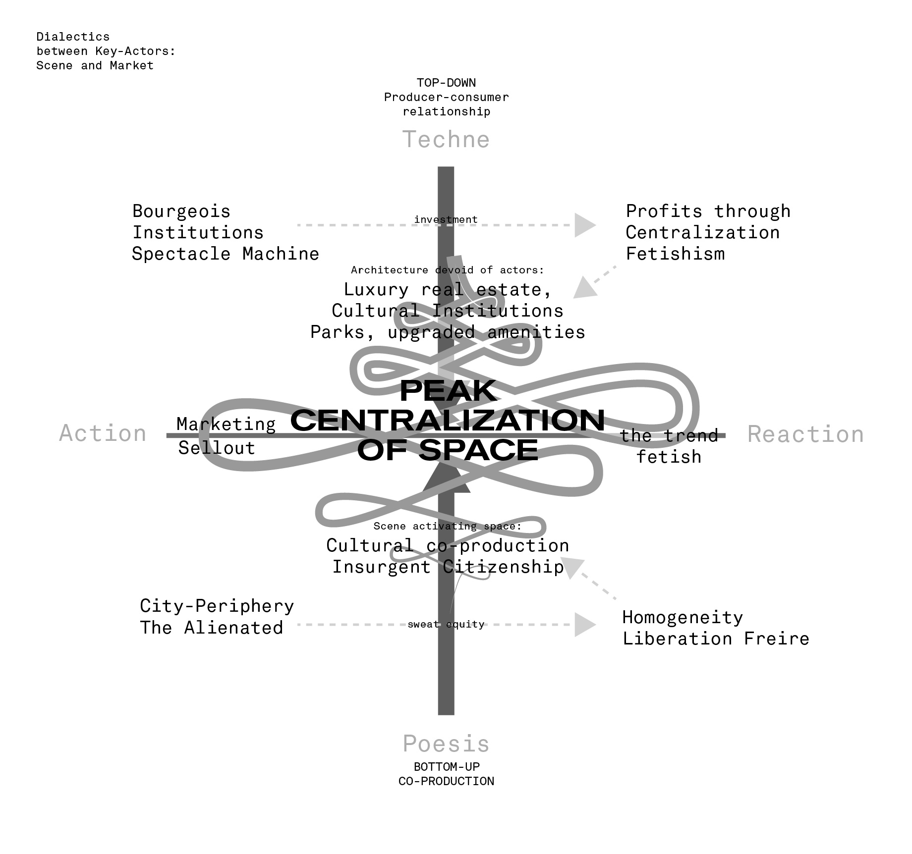

Theorizing the Scene
by Waldo E Walle
We must first understand what we mean by the scene, and why it presents a potential within urban practice.
The Scene, implies associations to theater and cinema. Certainly in relation to framing a stage/set wherein all its actors of the scene interact. Perhaps in relation with time, "the scene" called for is specific, separate from the unrecognized scenes — perhaps because these other are mundane. The specificity along with its colloquial use, suggest that its part of a greater collective experience that others can identify.
The Scene is conceived through its scenery. He who conceives the scene is a spectator, who can only see a limited view wherein these actors gather to perform, or showcase their work. The introduction of the spectator is important, as he is foreign to the scene, non-participant. As a result of the combination of scene and spectator, the theater is completed, creating a division and its inherent alienation, in order to build a machine for profit. The spectator only consumes the product of the scene experientially, as scenery, but the scenery must be produced, and that scenery is produced by virtue of the scene. To further understand the scene, one needs to see beyond its scenery.
From the actor's point of view, the scenery observed, is merely a climax. For these "the scene" doesn't stop, as they're involve in its production: planning, making, cleaning, and many other activities that are required to produce a scenery. Within this joint effort of co-producing a scenery, a bond between the main actors emerges, and thus a community with common vision of the world. For those in the scene, it infiltrates all aspects of their lives: relationships, unrelated work to creative practice, partnerships, etc.
Within the spatial experience of the city, the scene announces its presence. As the scene gathers momentum through virtue of aesthetic, and social seduction, it creates a cultural centrality. It gathers those who seek to participate in the production of the scene, or those who just seek to experience its scenery. The scene emerges in opposition to Lefebvre's abstract space, the production of spatial homogeneity.
From this simple analysis, we can conclude that the scene is utilized to call upon something logically understood by a collective body, something that involves a gathering of multiple actors that produces a scenery. As such it produces three different products: first, the production cultural manifestations which entails aesthetics experiences and/or practices, second a community that is created in the practice of co-producing culture, and third a central-attractor within the spatial experience of the city. It is within such abstractions that we can utilize the conception of the scene beyond a limited high-brow conceptions of artist and apply it throughout cultures, and spaces. The scene (away from the eyes of the spectator) is simply a breathing counter-culture, one that is in constant renegotiation of its identity in order to understand itself in relation to previous homogeneity; it is the emergence of active actors that re-imagine their surroundings. It is through such active spaces of counterculture that we can momentarily conceive a possibility for a new society. It as such that we can conceptualize the scene as an emergence of counterpublics, united through a co-production of everyday life.